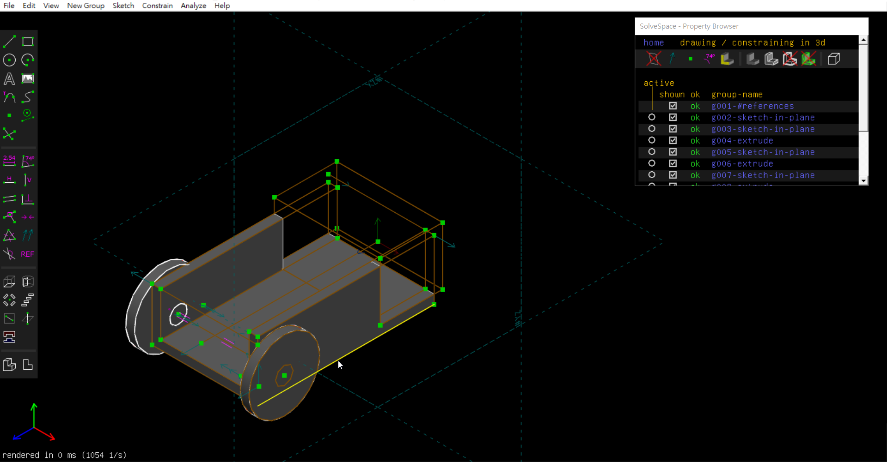
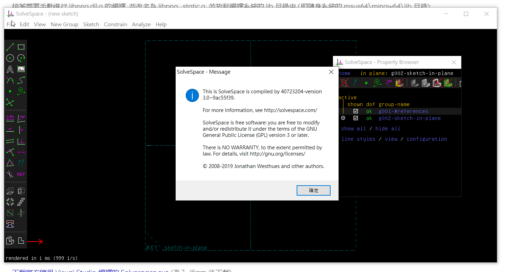

week2-5 <<
Previous Next >> week10-14
week6-9
WEEK 6
Solvespace 繪製
1. 利用 Solvespace 繪製雙輪車所需要的零組件
2. 首先繪製自走車之輪子，定義適當尺寸
3. 開新檔繪製自走車本體，並對前端進行部分除料
4. 於本體上除料裝置輪軸之孔
5. 開新檔組裝自走車本體與輪子
6. 錄製操作影片
https://www.youtube.com/watch?v=_nad16BPAiw
完成圖

V-rep 模型控制
1. 下載V-rep 3.6.1 rev4 與 web_vrep2.zip(local)至個人隨身碟
2. 開啟V-rep 3.6.1 rev4裡的vrep.exe後開啟 web_vrep2裡的two_wheeler.ttt
3. 利用小白框開啟web_vrep2裡的app.py以開啟localhost:5000
4. 利用localhost:5000操控小車轉向與速度
5. web_vrep2裡沒有remoteApi.dll檔的話，要到V-rep 3.6.1 rev4找到programming裡
remoteApiBindings裡lib裡Windows裡64bit裡複製到web_vrep2，才可使用app.py開
啟localhost:5000操控小車
6. 錄製操作影片
https://youtu.be/A2EmOCHyZ78
新增啟動與停止按鈕
1. 首先開啟 wed_vrep2 資料夾裡tempate資料夾的controls進編輯器
2. 利用原有按鈕的程式進行複製修改，新增啟動及停止的按鈕
3. 接著拉wed_vrep2 資料夾裡的 vrep_linefollower.py檔進編輯器
4. 在 def to direction 下加上 if direction == 'start': 後打上vrep.simxStartSimulation(self.clientID, vrep.simx_opmode_oneshot) 定義開始按鈕
5. 接著打上 elif direction == 'stop':
vrep.simxStopSimulation(self.clientID, vrep.simx_opmode_oneshot) 定義停止按鈕
6. 後續打上else : 並排列好順序
7. 利用 app.py 開啟 localhost:5000
8. 打開vrep 導入雙輪車，利用 localhost:5000 進行開始與停止操控
9. 錄製操作影片
https://youtu.be/L9n3tCWMm-0
WEEK 7
Slovespace編譯
1. 到tmp > solvespace > build >src >CMakeFiles > solvespace.dir刪掉 slovespace.cpp.obj檔
2. 到 solvespace >src找到 slovespace.cpp 拉進編輯器
3. 利用ctrl + f 進行搜尋 ，找GPL
4. 找到 this is solvespace 在後面加上 is compiled by 自己學號
5. 利用小黑框，路徑移置 tmp > solvespace > build 打上 mingw32-makemingw32-make 指令
6. 完成後到 solvespace > build >bin 開啟 slovespace.exe ，進help 點 about 確認驗證完成
7. 錄製操作影片
https://youtu.be/_645vxhGprU
完成圖

Solvespace 繪圖認證
1. 繪製零件3
2. 錄製操作影片
https://youtu.be/wy8zfTwbQhY
完成圖

WEEK 8
CMSimfly網際內容管理啟用
https://youtu.be/q95RlvUWfcg
week2-5 <<
Previous Next >> week10-14